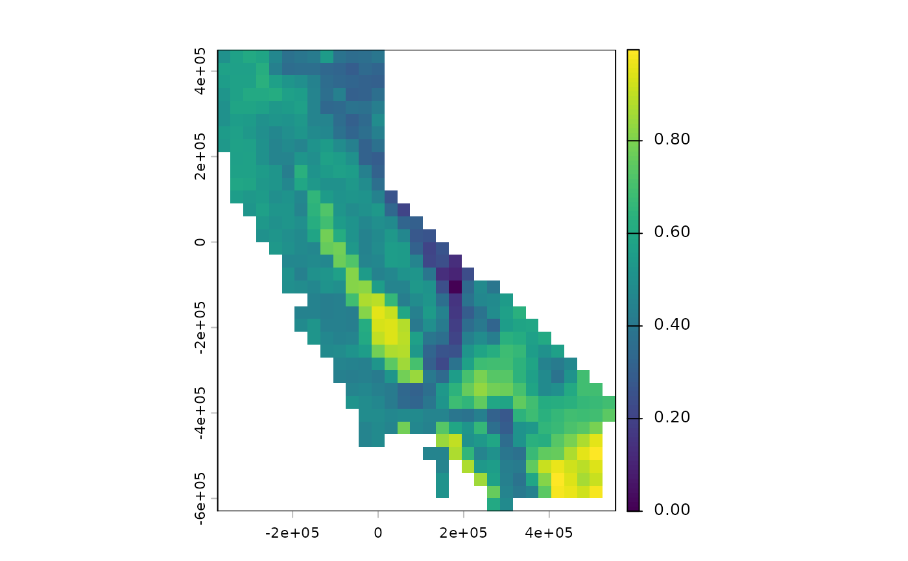
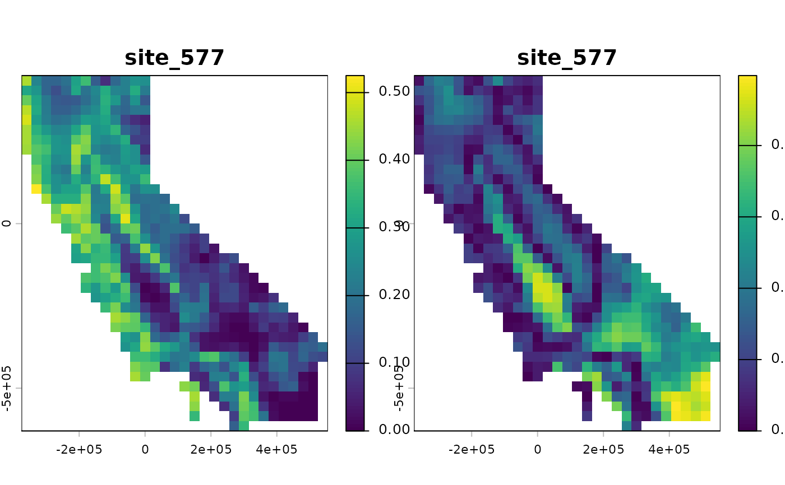
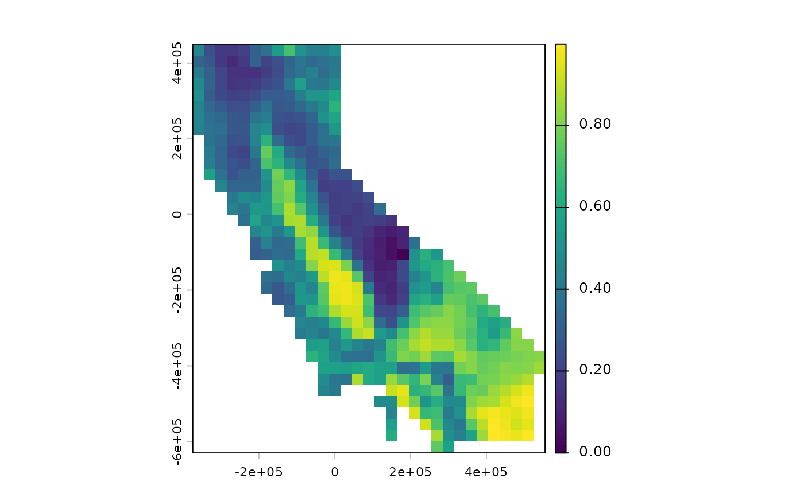
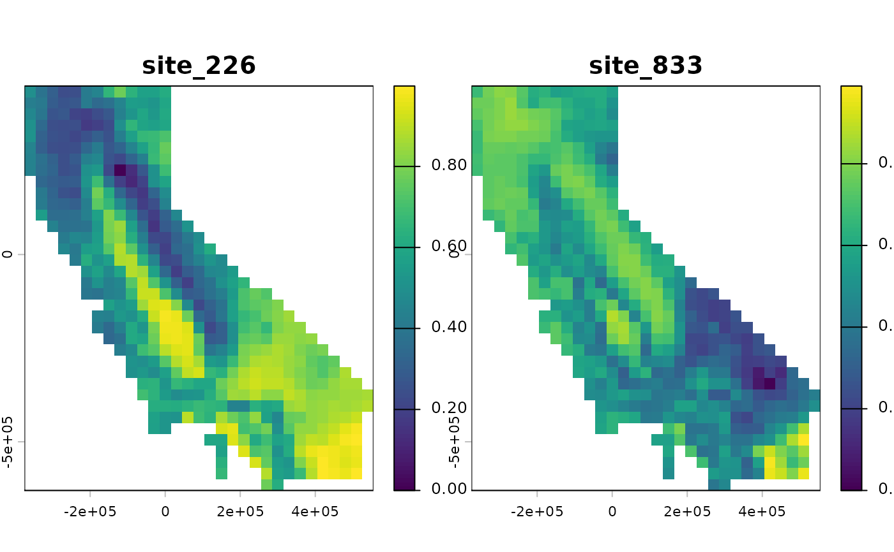

Phylogenetic dissimilarity between focal sites and all other sites
Source:R/ps_dissim_focal.R
ps_dissim_focal.RdComputes phylogenetic dissimilarity between one or more focal sites and every site in the data set, returning a map for each focal site. Mapping these values shows how lineage composition changes with distance from a focal location.
Arguments
- ps
A
phylospatialobject.- site
The focal site(s), given as one of:
An integer vector of site indices, between 1 and
ps$n_sites(cell numbers for raster data, or row numbers for polygon or matrix data).A two-column matrix or data frame of x and y coordinates, in the coordinate reference system of
ps$spatial.An
sforSpatVectorof points, which are reprojected to matchps$spatialif needed.
Focal sites must be occupied.
- method
Dissimilarity index:
"focal_difference"(see Details), or any method accepted byps_dissim().- spatial
Logical: if
TRUE(the default) andpshas spatial data, return aSpatRasterorsfobject; otherwise return a matrix with one row per site.- ...
Further arguments passed to
ps_dissim(), such asfun,endemism,normalize, ortips_only.
Value
A SpatRaster or sf object with one layer or variable per focal site, or a matrix with one
column per focal site, giving values for every site (NA for unoccupied sites).
Details
This function shares its computations with ps_dissim(): for any symmetric index, ps_dissim_focal(ps, i, ...)
gives the same values as the corresponding row of as.matrix(ps_dissim(ps, ...)). For the Sorensen family
and "focal_difference", values are computed for the focal sites only, without building the full pairwise
matrix; other methods compute the full matrix and return the relevant rows.
In addition to the methods available in ps_dissim(), this function offers method = "focal_difference", an
asymmetric index: the fraction of the focal site's branch length that is absent from each other site.
Writing \(a\) for the branch length shared by the focal site and another site, and \(b\) for the branch
length found only at the focal site, it is \(b / (a + b)\). It is 0 at the focal site, 1 at sites sharing
none of the focal site's lineages, and, unlike symmetric indices, ignores lineages found only at the other site.
It is the complement of a quantitative, phylogenetic dispersion field (Graves & Rahbek 2005).
Because the comparison has a direction, it is only defined relative to a focal site and is not available in
ps_dissim().
References
Graves, G. R., & Rahbek, C. (2005). Source pool geometry and the assembly of continental avifaunas. Proceedings of the National Academy of Sciences, 102(22), 7871-7876.
Examples
ps <- moss()
# dissimilarity from one site, given as a site (cell) index
site <- ps$occupied[250]
d <- ps_dissim_focal(ps, site)
terra::plot(d)

# turnover and nestedness components, from the same site
terra::plot(c(ps_dissim_focal(ps, site, method = "sorensen_turnover"),
ps_dissim_focal(ps, site, method = "sorensen_nestedness")))

# fraction of the focal site's branch length absent from each site
terra::plot(ps_dissim_focal(ps, site, method = "focal_difference"))

# focal sites can also be given as coordinates
xy <- terra::xyFromCell(ps$spatial, ps$occupied[c(100, 400)])
terra::plot(ps_dissim_focal(ps, xy))
